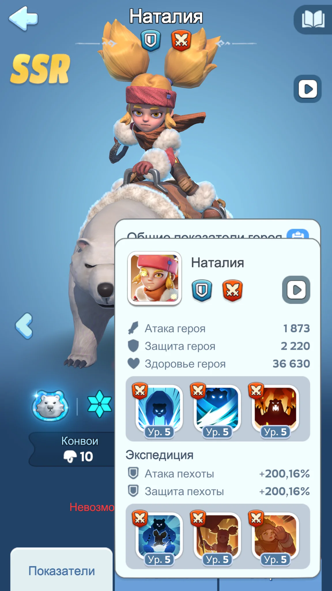
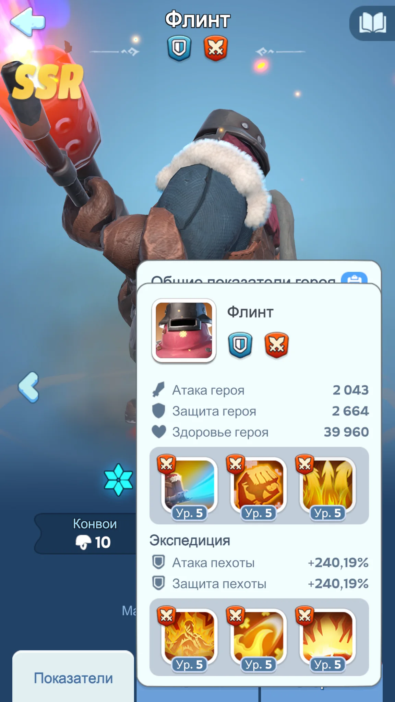
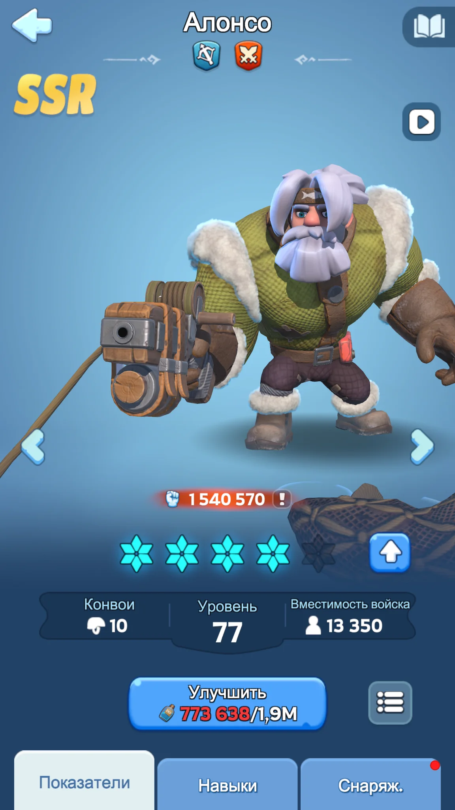
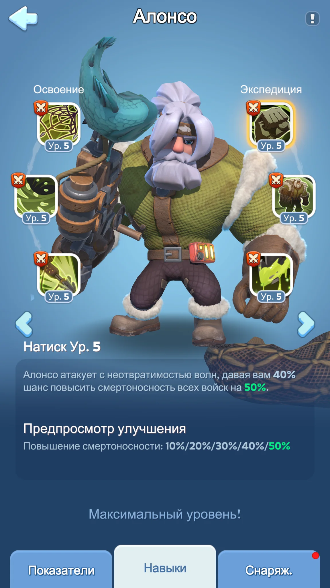
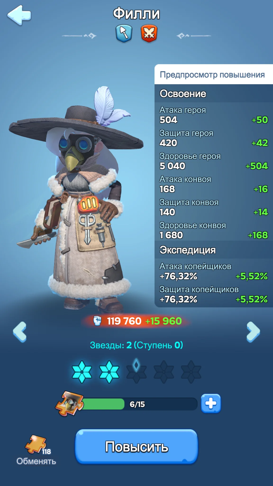
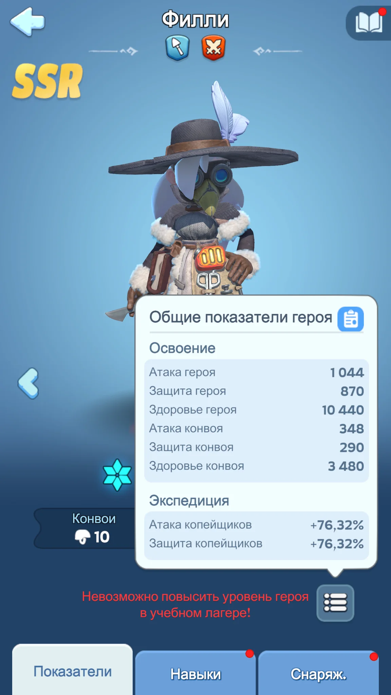
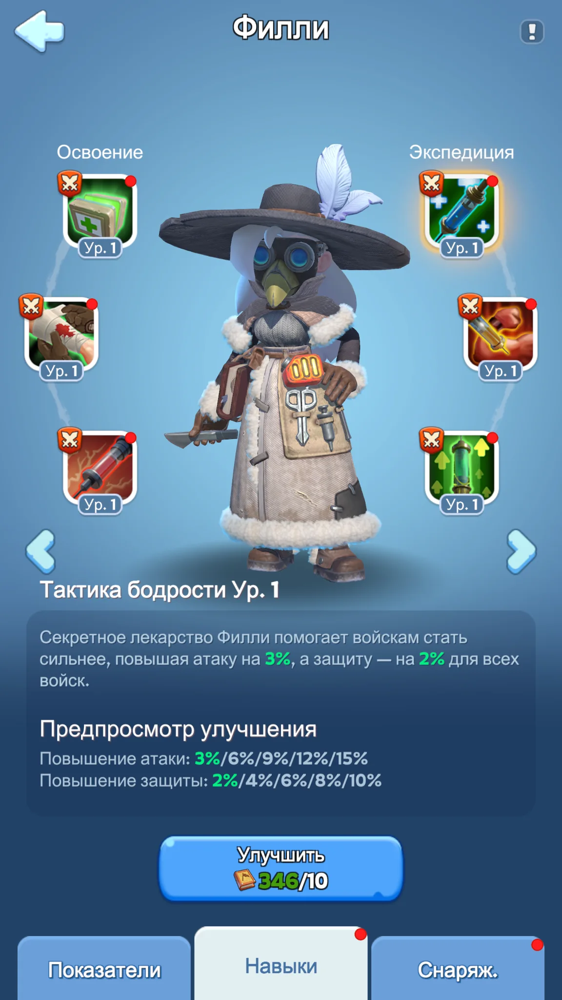

0. Новое поколение против старого
Каждое новое поколение обычно приходит с более высокими экспедиционными бонусами. Поэтому старый полностью собранный герой не становится «вечным» только из-за уже вложенных ресурсов: со временем его место в основном отряде занимает более новое поколение того же класса.


240,19% против 200,16% по атаке и защите пехоты. Это хорошо показывает, почему нельзя оценивать героя только по принципу «я уже много в него вложил».
Навыки, роль в ралли/гарнизоне, доступность фрагментов и эксклюзивное снаряжение тоже важны. Поколение — первый фильтр, а не единственный.
Смена поколения обычно означает переход из первого состава в резерв, а не удаление героя из игры. Хорошо прокачанные старые герои продолжают работать там, где нужен не один идеальный марш, а несколько полноценных составов.
Литейная, Безумная Джо и другие режимы с несколькими маршами дают старым героям новую роль: они становятся основой дополнительных отрядов.
Здесь важен весь состав. Старый герой с высокой звёздностью и прокачанными навыками может ещё долго оставаться полноценным бойцом.
Для нескольких составов нужен широкий ростер. Герои прошлых поколений закрывают резервные позиции и позволяют собирать дополнительные боеспособные отряды.
Практический вывод: перестать активно вкладывать универсальные фрагменты в старого героя — не то же самое, что перестать им пользоваться. Уже сделанные вложения продолжают приносить пользу в резервных составах.
1. Три источника мифических героев
Источник героя определяет не только то, насколько легко его открыть, но и насколько реально довести его до рабочего состояния. На мобильном удобнее держать в голове три простые категории.
Самый предсказуемый источник для обычного игрока. Гемы можно накопить заранее и целенаправленно довести героя до нужных звёзд.
Открыть героя сравнительно легко, но дальнейшая прокачка часто упирается в универсальные мифические фрагменты.
Сильные герои, но высокая цена полной прокачки. При ограниченном бюджете сначала считаем весь путь, а не цену открытия.
Филли при ограниченных ресурсах имеет более низкий приоритет, если под неё нет конкретной задачи или состава.
2. Звёзды и оптимальное состояние
Звёздный уровень — это не только цифра рядом с портретом. Он повышает базовые показатели героя и проценты атаки/защиты войск в Экспедиции. Поэтому звёзды напрямую влияют на то, сколько пользы герой приносит всему отряду.
Для большинства мифических героев 4★ — сильная рабочая остановка: герой уже получает высокий объём статов и открывает полноценную прокачку навыков.
5★ имеет смысл, если герой остаётся основным и не вытесняется ближайшим поколением.




3. Книги и навыки
Книги навыков — такой же ограниченный ресурс, как фрагменты. Высокая звёздность без прокачанных навыков не превращает героя в полноценного боевого персонажа.

- Копим книги под следующего основного мифического героя.
- Не повышаем второстепенного героя только потому, что интерфейс показывает доступное улучшение.
- Для героя, который нужен прежде всего при присоединении к ралли, первым приоритетом становится его первый экспедиционный навык.
- Если герой — полноценная часть собственного марша, ориентируемся уже на комплект навыков, а не на один отдельный эффект.
4. Как принимать решение о вложении
- Поколение: насколько близко следующий герой того же класса?
- Роль: он нужен в основном марше, гарнизоне, ралли или только как герой присоединения?
- Цена: реально ли довести его не только до звёзд, но и до нужных навыков?
- Срок жизни: будет ли он полезен достаточно долго, чтобы вложение успело окупиться?
Остановиться на рабочем 4★ с нормальными навыками обычно полезнее, чем разнести фрагменты и книги по нескольким персонажам, которые не готовы ни для одного состава.